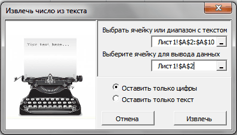

Tips_Macro_Number_From_Text.xls (80,0 KiB, 9 014 скачиваний)
Tips_Macro_Number_From_Text.xls (80,0 KiB, 9 014 скачиваний)Как оставить в ячейке только цифры или только текст?
Вот бывает так: есть у Вас в ячейке некий текст. Допустим "Было доставлено кусков мыла 763шт.". Вам нужно из этого только 763 - чтобы можно было провести с этим некие математические действия. Если это только одна ячейка - проблем тут нет, а если таких ячеек пару тысяч? И к тому же все разные?
Никакой зацепки для извлечения данных. Пару тысяч таких строк удалять вручную весьма утомительное занятие, надо сказать. Да еще и не быстрое.
Есть несколько вариантов решения подобной задачи.
СПОСОБ 1: не используем макросы
можно применить формулу массива, вроде такой:
=ПСТР(A1;МИН(ЕСЛИ(ЕЧИСЛО(-ПСТР(A1;СТРОКА($1:$99);1));СТРОКА($1:$99)));ПРОСМОТР(2;1/ЕЧИСЛО(-ПСТР(A1;СТРОКА($1:$99);1));СТРОКА($1:$99))-МИН(ЕСЛИ(ЕЧИСЛО(-ПСТР(A1;СТРОКА($1:$99);1));СТРОКА($1:$99)))+1)
Три важных момента:
Теперь коротко разберем формулу на примере фразы: Было доставлено кусков мыла 763шт.
СПОСОБ 2: используем макросы
Самый главный недостаток метода при помощи формулы, приведенной выше - из текста "Было доставлено кусков мыла 763шт., а заказывали 780" формула вернет не только числа, а и текст между первой и последней цифрой: 763шт., а заказывали 780.
Решить же проблему извлечения цифр даже из такого текста при помощи VBA куда проще и гибче. Плюс можно не только цифры извлекать, но и наоборот - цифры удалить, а извлечь только текст. Ниже приведен код пользовательской функции, которая поможет извлечь из строки только числа либо только текст. Иными словами, результатом функции будет либо только текст, либо только числа.
Function Extract_Number_from_Text(sWord As String, Optional Metod As Integer) 'sWord = ссылка на ячейку или непосредственно текст 'Metod = 0 – числа 'Metod = 1 – текст Dim sSymbol As String, sInsertWord As String Dim i As Integer If sWord = "" Then Extract_Number_from_Text = "Нет данных!": Exit Function sInsertWord = "" sSymbol = "" For i = 1 To Len(sWord) sSymbol = Mid(sWord, i, 1) If Metod = 1 Then If Not LCase(sSymbol) Like "*[0-9]*" Then If (sSymbol = "," Or sSymbol = "." Or sSymbol = " ") And i > 1 Then If Mid(sWord, i - 1, 1) Like "*[0-9]*" And Mid(sWord, i + 1, 1) Like "*[0-9]*" Then sSymbol = "" End If End If sInsertWord = sInsertWord & sSymbol End If Else If LCase(sSymbol) Like "*[0-9.,;:-]*" Then If LCase(sSymbol) Like "*[.,]*" And i > 1 Then If Not Mid(sWord, i - 1, 1) Like "*[0-9]*" Or Not Mid(sWord, i + 1, 1) Like "*[0-9]*" Then sSymbol = "" End If End If sInsertWord = sInsertWord & sSymbol End If End If Next i Extract_Number_from_Text = sInsertWord End Function
Данный код необходимо поместить в стандартный модуль книги. После этого в мастере функций в категории Определенные пользователем (User Defined) будет доступна функция Extract_Number_from_Text, которую можно будет применять как обычную функцию на листе.
Для извлечения только чисел
=Extract_Number_from_Text(A1; 0)
или
=Extract_Number_from_Text(A1)
Для извлечения только текста
=Extract_Number_from_Text(A1; 1)
Подробнее про создание пользовательских функции и их применении можно почитать в статье Что такое функция пользователя(UDF)?
Помимо функции пользователя решил выложить и вариант с использованием диалогового окна:

Выбрать ячейку или диапазон с текстом(Лист1!$A$2:$A$10) - здесь указывается диапазон с исходными значениями, из которого необходимо оставить только числа или только текст.
Выберите ячейку для вывода данных(Лист1!$A$2) - указывается одна ячейка, с которой начать вывод преобразованных значений. В качестве этой ячейки можно выбрать первую ячейку диапазона с текстом(исходного) если необходимо произвести изменения сразу в этих же ячейках(как на рисунке). Осторожнее с таким указанием, т.к. результат работы кода может быть не совсем таким, какой вы ожидали, а вернуть прежние данные уже не получится - если только не закрыть файл без сохранения изменений.
Оставить только цифры, Оставить только текст- думаю не надо пояснять. Здесь выбираем, что оставить в качестве результата.
Небольшое дополнение к использованию кода
В коде есть строка:
If LCase(sSymbol) Like "*[0-9.,;:-]*" Then
|
1 |
Данная строка отвечает за текстовые символы, которые могут встречаться внутри чисел и которые надо оставить(не удалять наравне с другими не числовыми символами). Следовательно, если какие-то из данных символов не нужны в конечном тексте - их надо просто удалить. Например, чтобы оставались исключительно числа(без запятых и пр.):
If LCase(sSymbol) Like "*[0-9]*" Then
|
1 |
если надо исключить из удаления помимо цифр точку(т.е. будут извлечены цифры и точка):
If LCase(sSymbol) Like "*[0-9.]*" Then
|
1 |
и т.д.
Скачать пример:
Tips_Macro_Number_From_Text.xls (80,0 KiB, 9 014 скачиваний)